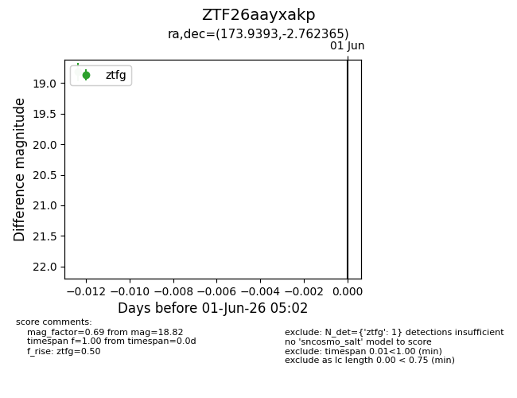
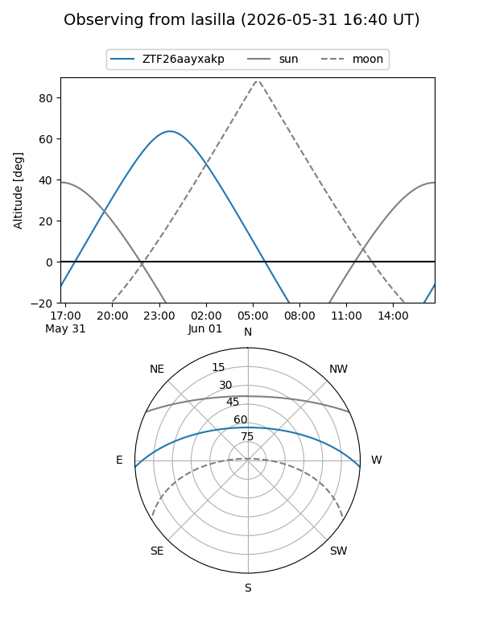
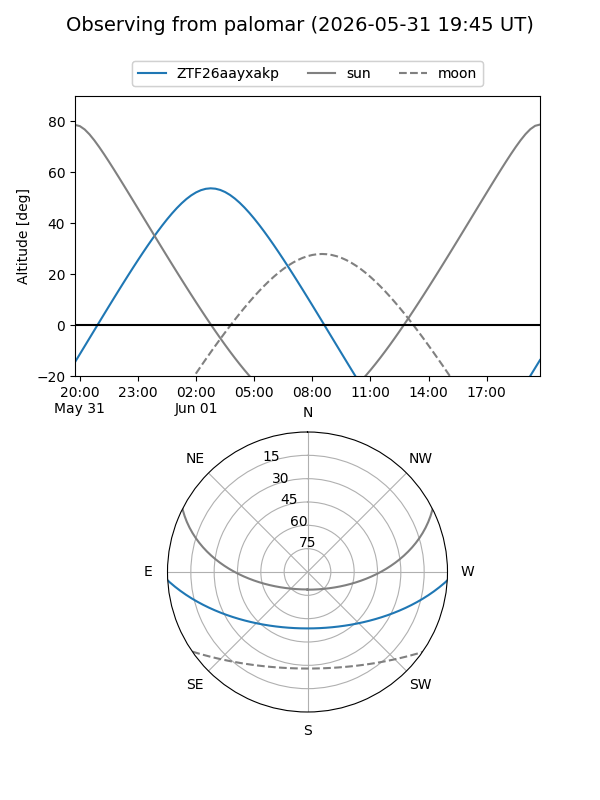

ZTF26aayxakp
Target ZTF26aayxakp at 2026-06-01 05:03
Aliases and brokers:
lsst-FINK: link
lsst-Lasair: link
lsst-ALeRCE: link
ztf-FINK: link
ztf-Lasair: link
ztf-ALeRCE: link
alt names
ZTF26aayxakp (ztf,fink_ztf)
Coordinates:
equatorial (ra, dec) = 173.9393,-2.76236
equatorial (HMS+DMS) = 11:35:45.42,-02:45:44.51
galactic (l, b) = (268.5732,+54.97974)
Flags:
Photometry:
last ztfg=18.82
1 ztfg detections
Lightcurve

Visibility


Additional plots